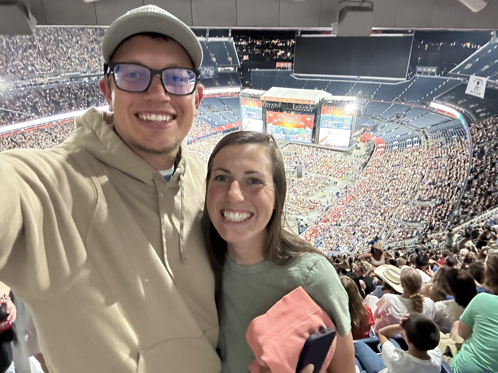
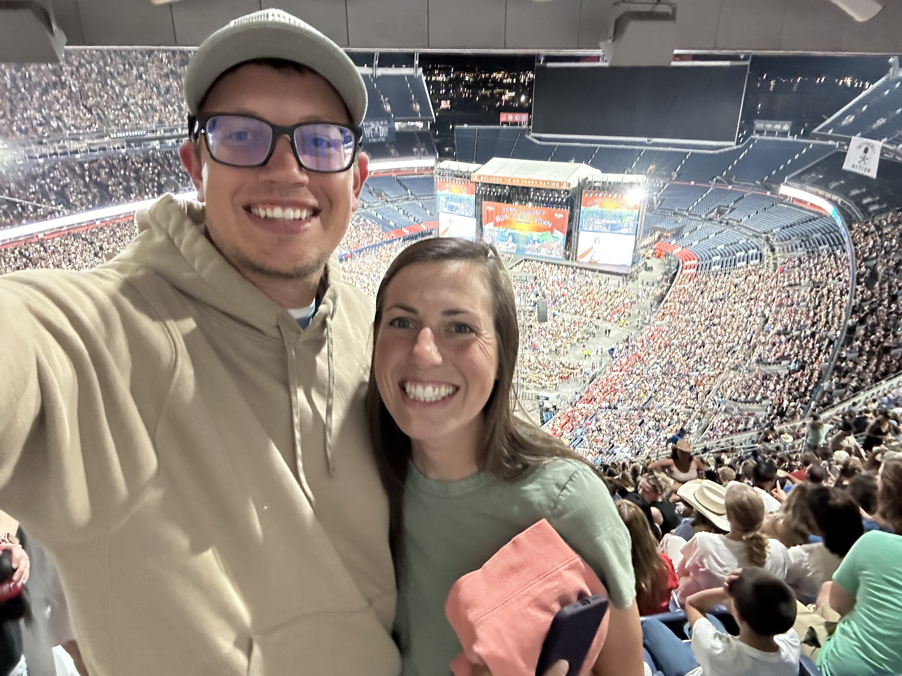
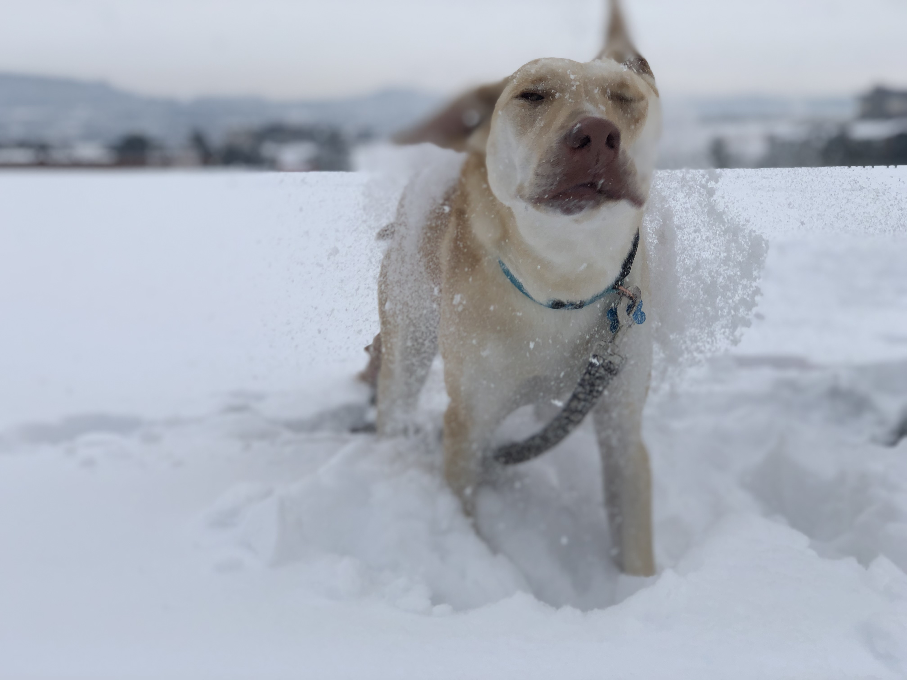
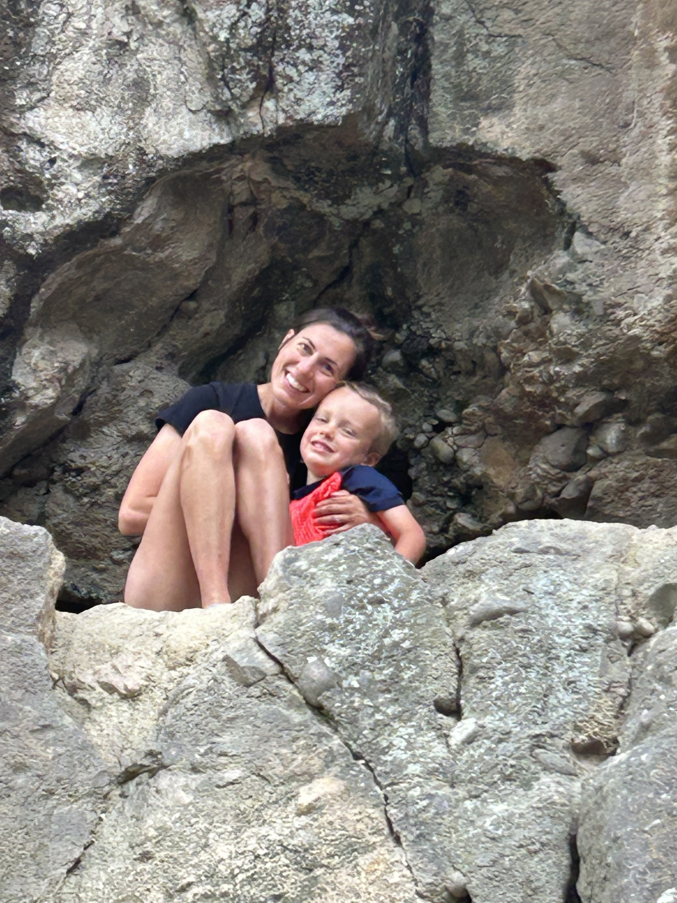
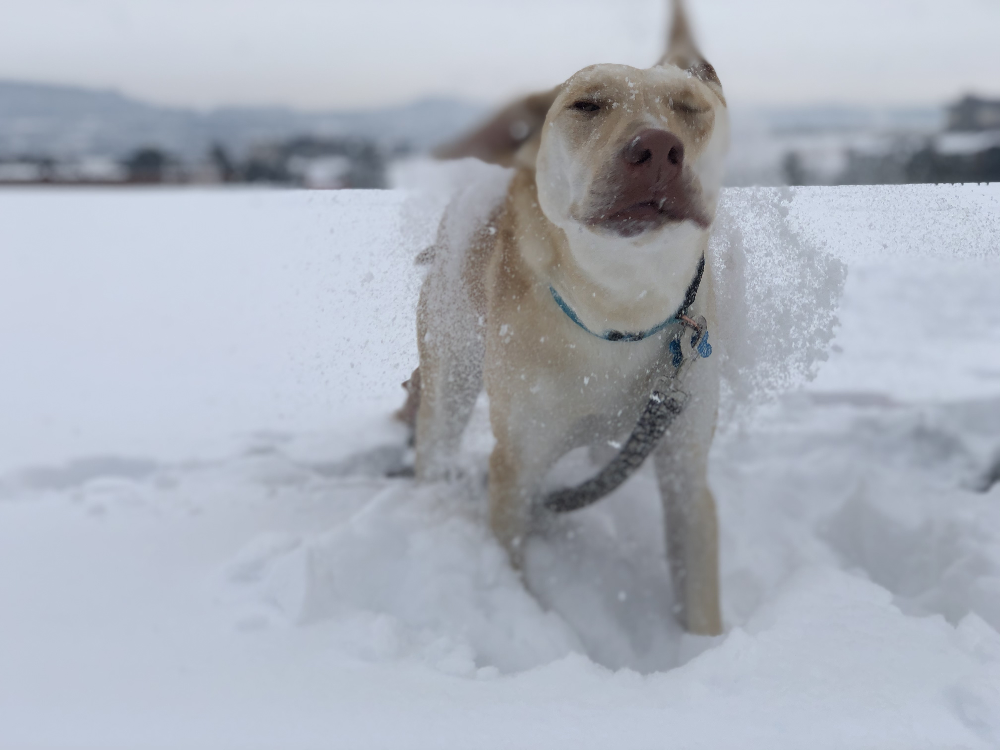
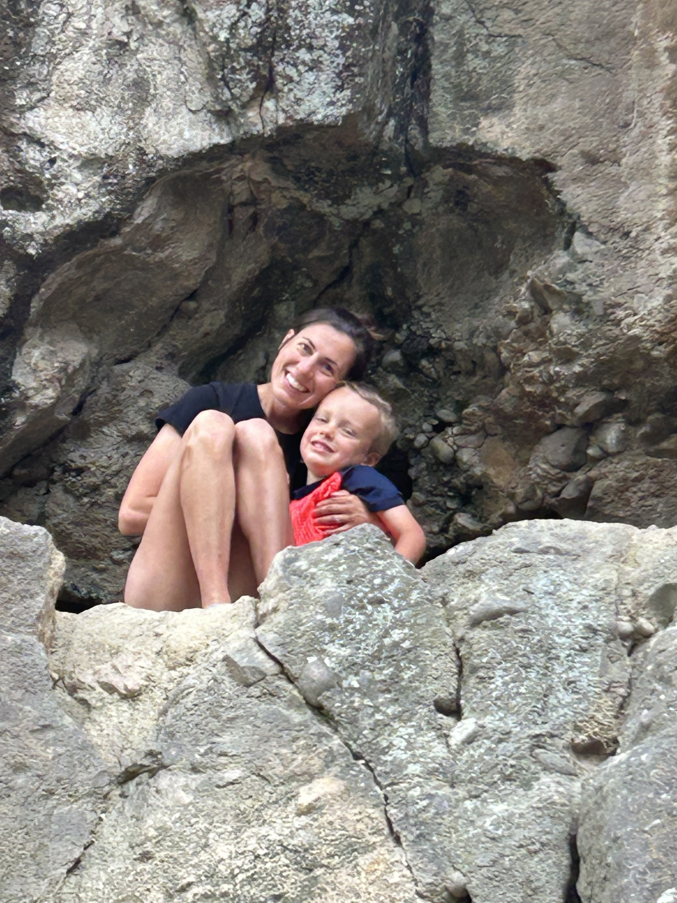

I'm Jacob McMonagle (you can call me Mr. McMonagle or just Mr. M!). As a proud UNC graduate with 6 years of teaching experience across elementary grades, I've found my perfect home in middle school—this marks my exciting third year working with this dynamic age group! Teaching IT Applications, Computer Science, and Digital Design allows me to combine my passion for technology with creative problem-solving. Every day, I get to help students discover how digital tools can bring their ideas to life—whether they're coding their first game or designing 3D-printed solutions.
My Family
Whitney McMonagle
My wife, Whitney McMonagle, works as an Occupational Therapist for Douglas County School District. We enjoy staying active together, especially playing sports - she's an excellent soccer player. We also share a competitive spirit when it comes to board games.
Children
Our son Bryce is four years old. He loves playing outside, whether it's running through sprinklers or swimming at the MAC. Bryce also enjoys dancing and singing songs for us. Most recently he has been biking with no training wheels and building all of the different lego sets he can get his hands on. His favorite right now is a dragon.
Our daughter Charlie is two years old. Her bright smile never fails to make my day better. She loves watching her big brother run and jump around, often trying to join in the fun. She loves singing and dancing most of all when she ins't trying to do exactly what Bryce is doing.
Tippy
I have a dog named Tippy. She is a mix and we still don’t know what type of dog she is. Let me know what you think she could be!
 

 


